ICTC 지휘통제절차 웹툰 · 시즌 1
7화 「조직을 세우다」
단위지휘관, 무전망, 자원대기소, RIT — 현장을 조직으로 움직인다
현장지휘소. 지휘대장 정종인이 지휘차 앞에서 고정지휘 중. 후착대가 속속 도착한다.
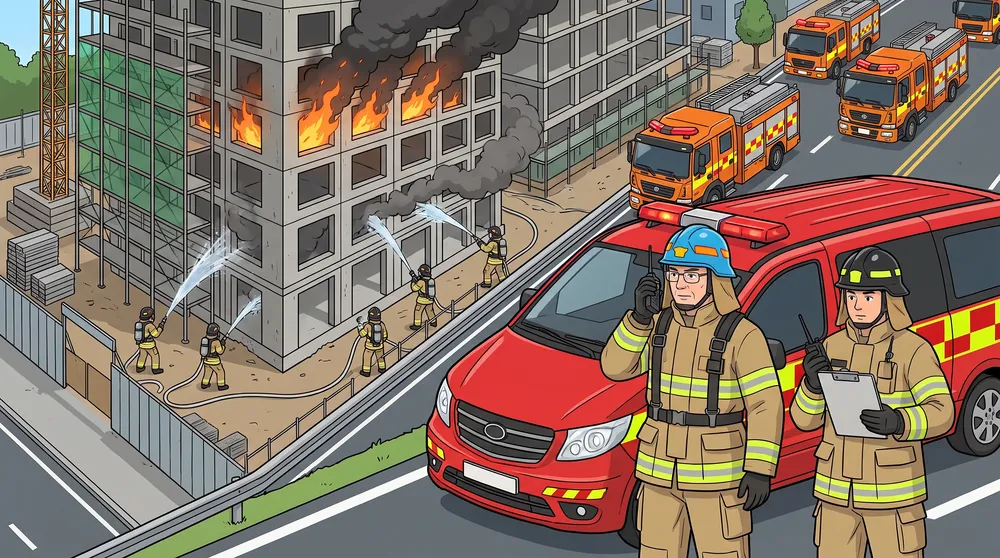
대응1단계로 부른 후착대가 대기1단계로 도착을 알린다.
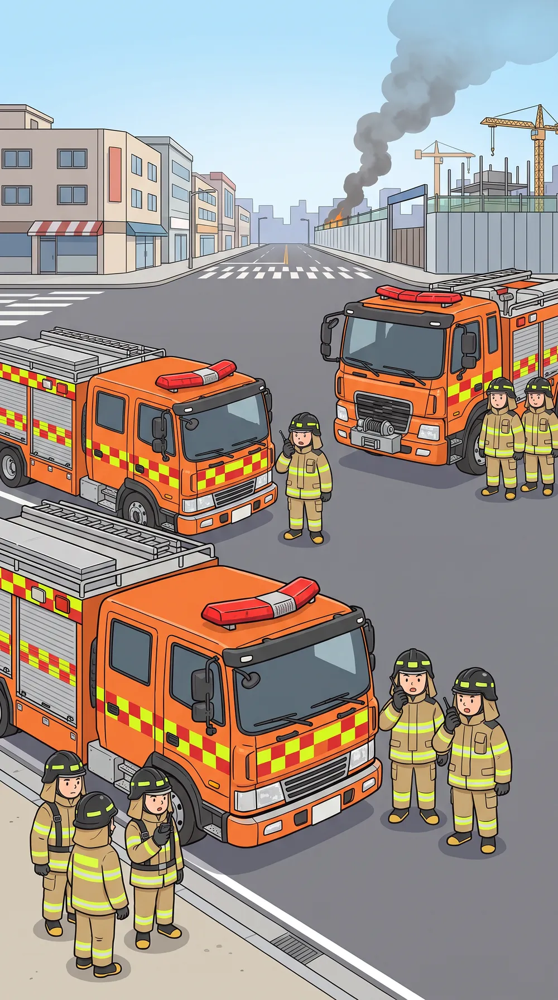
진압2대, 한솔로 교차로 도착, 대원 4명. 임무대기 중.
구조2대, 같은 곳 도착, 대원 4명. 임무대기 중.
진압4대, 도착, 대원 4명. 임무대기 중.
통솔범위: 지휘관 한 사람이 볼 수 있는 수는 3~7, 최적은 5. 넘기 전에 조직을 세운다.
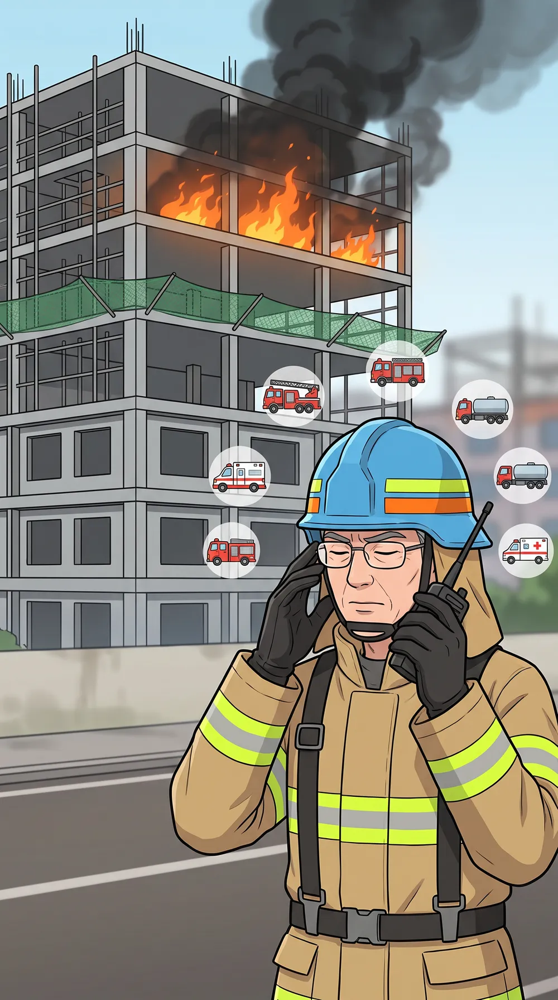
진압1대, 진압3대, 구조1대, 구급1대, 탱크차… 여기에 진압2대, 구조2대, 진압4대. 혼자 다 쥐면 반드시 놓친다.
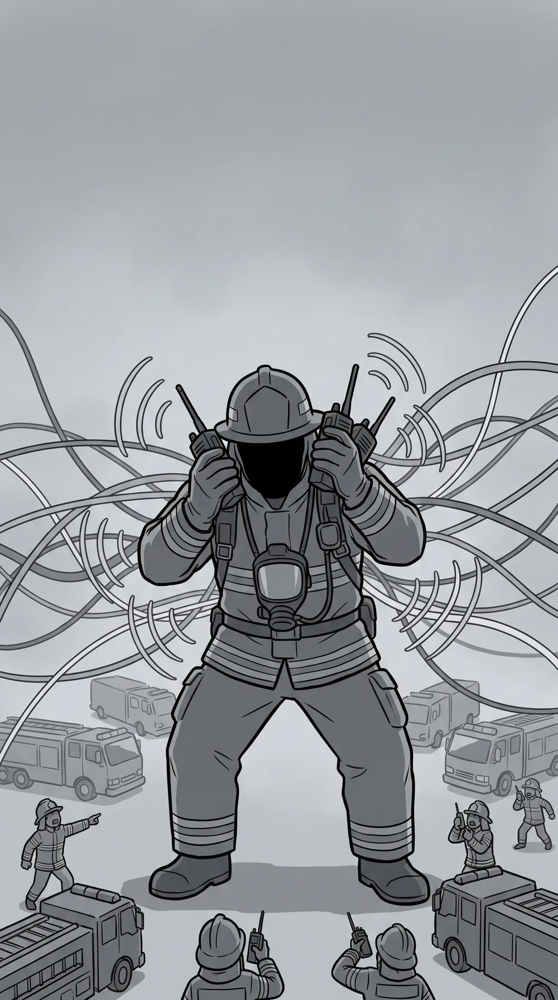
✕ 잘못된 예 — 모든 출동대가 지휘관 한 사람에게 직접 무전. 무전이 겹쳐 꼭 들어야 할 보고가 묻힌다.
지휘대장, 진압2대 4층…
지휘대장! 구조2대 5층…
탱크차 급수…
기다리던 출동대를 들여보낼 때는 어디서, 무엇을 할지 구체적으로.
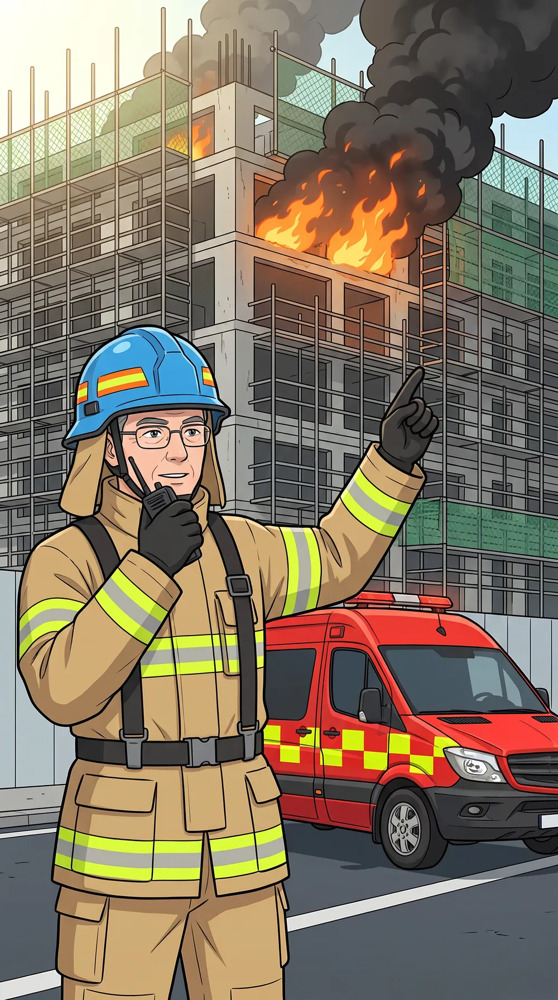
진압2대는 4층 진입 화재진압 및 인명검색, 구조2대는 5층 진입 인명검색 실시토록! 진압4대는 다음 지시까지 대기!
단위지휘관 지정: 층마다 지휘관을 세우고 명칭, 위치, 소속대를 알린다.
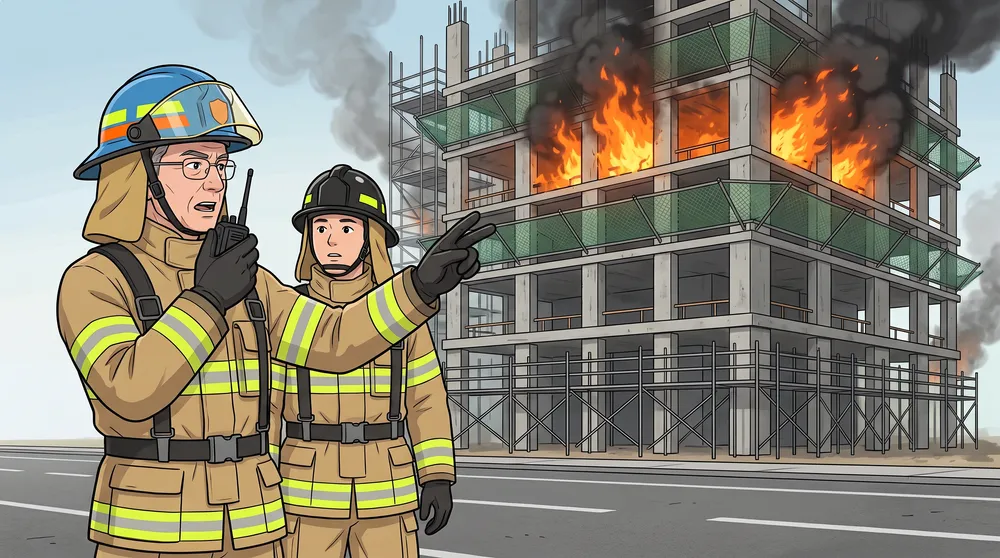
진압1대장을 4층 단위지휘관으로, 소속대는 진압1대·진압2대. 진압3대장을 5층 단위지휘관으로, 소속대는 진압3대·구조2대. 층별로 지휘토록!
받은 임무는 되풀이해 확인한다. 복명복창.
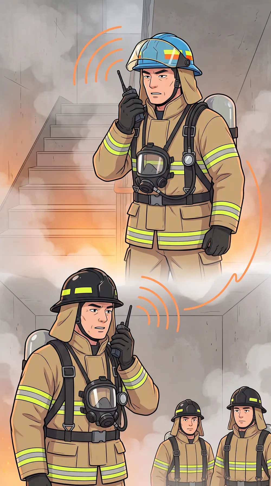
진압1대장, 4층 단위지휘관. 소속 진압1대·진압2대, 복명복창 완료.
진압3대장, 5층 단위지휘관. 소속 진압3대·구조2대, 수신 완료.
지금부터 무전망 분리 운영하겠음. 현장지휘관·상황실·단위지휘관·임시의료소장은 지휘망, 현장대원은 작전망, 유관기관은 지원망 사용토록!
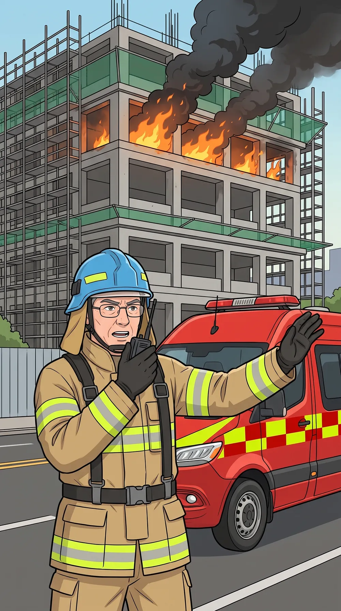
무전망 분리. 지휘망(PS-LTE): 현장지휘관 ↔ 단위지휘관·임시의료소장·상황실. 작전망(UHF): 단위지휘관 ↔ 소속 대원. 지원망: 유관기관. 지휘관은 이제 단위지휘관만 본다.
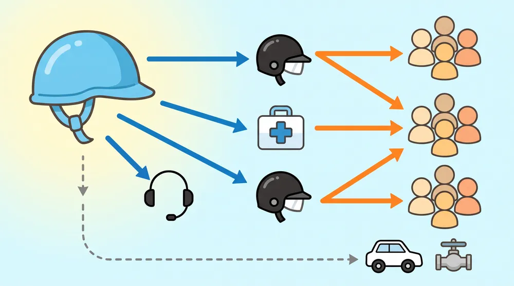
사람이 늘수록, 지휘는 나뉘어야 했다.
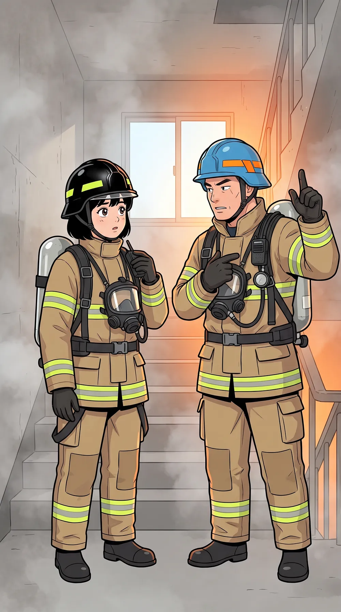
이제 지휘대장님 무전이 안 들려요.
네 무전은 작전망이다. 네 지휘관은 나고, 나는 지휘망으로 지휘대장님께 보고한다. 같은 층에선 얼굴 보고 말하고.
대기1단계가 길어지고 추가 출동대가 계속 오면, 자원대기소를 연다.
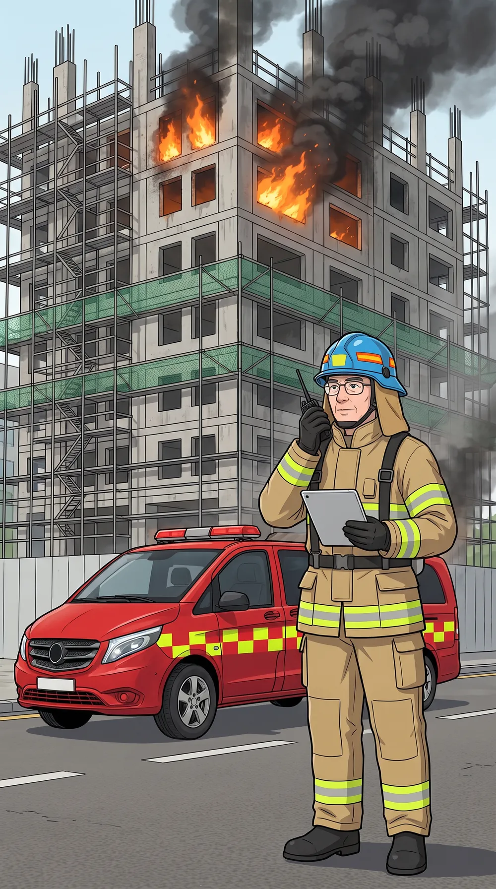
상황실, 여기 지휘대장. 자원대기소 운영 예정이니 현장 인근 적합한 장소 검색해서 알려 주기 바람.
상황실입니다. 한솔로 교차로 옆 공영주차장, 대형차 진입과 회차 가능합니다.
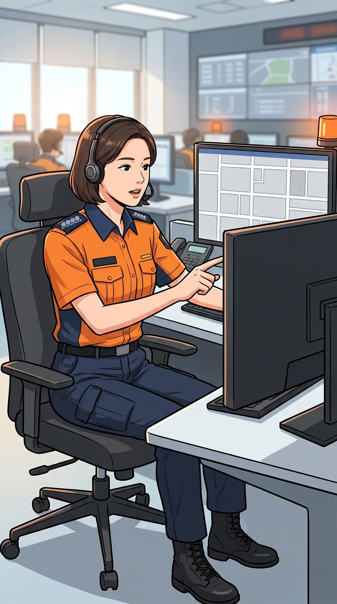
자원대기소에 도착한 출동대는 명칭, 책임자, 인원과 장비를 자원대기소장에게 보고하고 임무를 받는다.
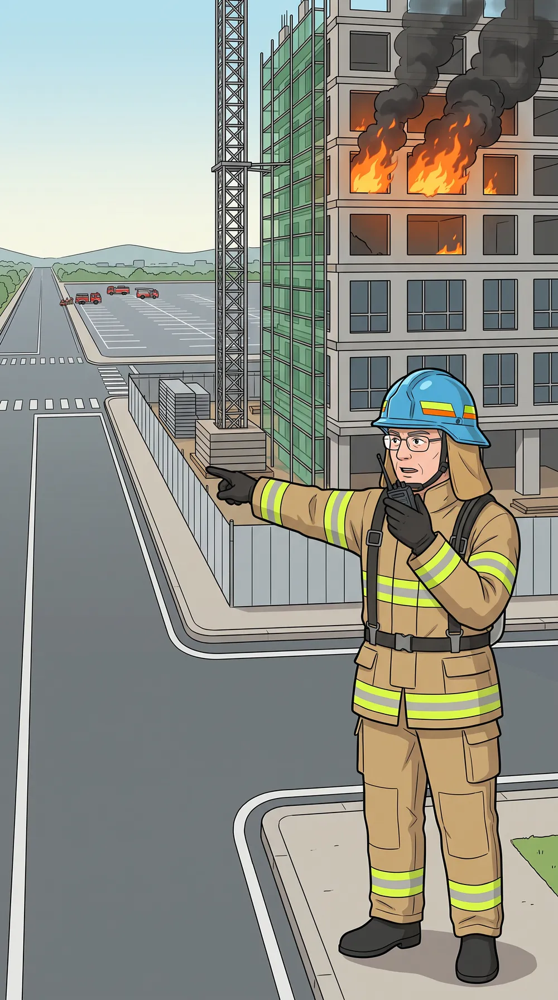
한솔로 교차로 옆 공영주차장을 자원대기소로 지정. 추가 출동대는 자원대기소로 집결, 통신은 자원대기소장으로 운영토록. 진압4대는 자원대기소로 이동해 대기. A면 주출입구 앞은 직전대기 장소로 지정!
자원대기소 위치, 전 출동대에 전파하겠습니다.
3단계 소방력 배치. 1단계: 위험지역에 투입. 2단계: 진입지점 가까운 안전한 곳에서 직전대기(교대·RIT). 3단계: 자원대기소에서 예비.
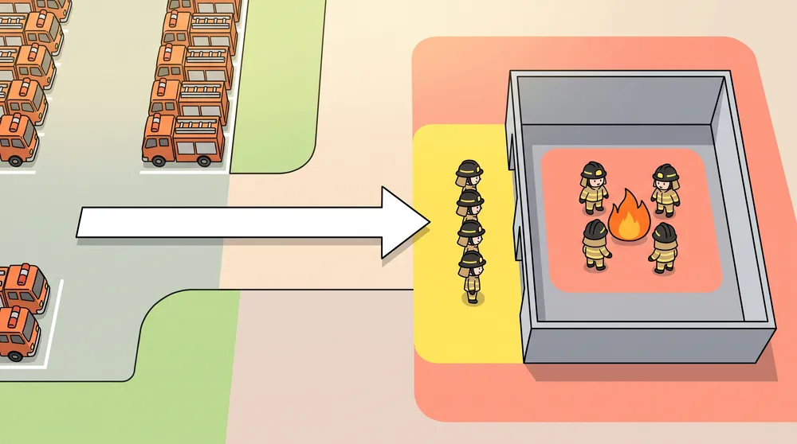
발견, 구조, 임시의료소, 이송. 구조대상자는 끝까지 따라간다.
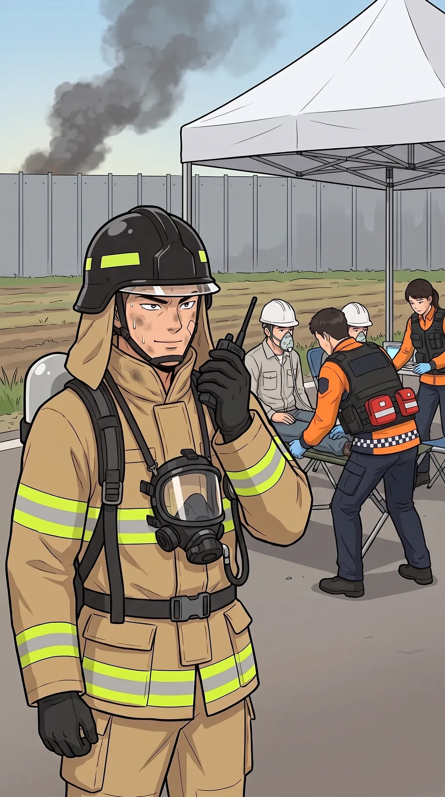
구조1대, C면 6층 구조대상자 2명 구조 완료. 둘 다 연기 흡입, 임시의료소에 인계했음.
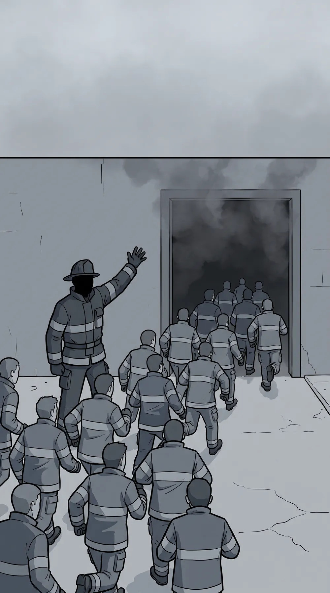
✕ 잘못된 예 — 가용 인력 전원 내부 투입. 안에서 대원이 고립되면 구하러 갈 사람이 없다.
구조1대도 4층으로 진입! 전원 투입해서 빨리 끝낸다!
RIT(신속동료구조팀): 위기에 처한 대원을 구하기 위해 직전대기 위치에서 기다린다.
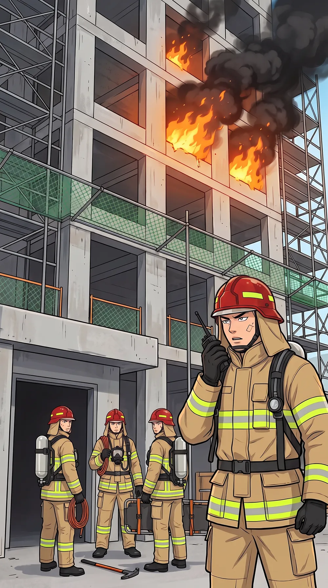
구조1대는 RIT 구성, A면 주출입구 앞 직전대기토록. 유사시 즉시 투입할 수 있도록 준비 바람.
구조1대, RIT 구성. A면 주출입구 앞 직전대기.
안전은 공사장 주변 1차 통제선 설치하고 소방활동구역 확보, 가스 확인 및 가설전기 차단토록.
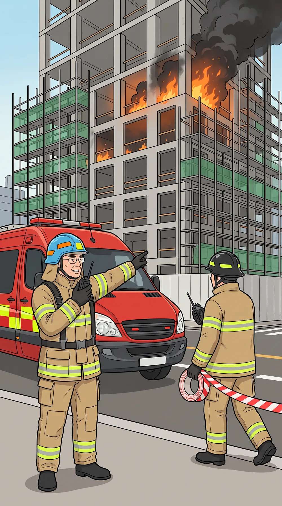
안전, 통제선 설치 후 결과 보고하겠음.
통제선. 1차 통제선(소방) 안은 개인보호장구를 갖춘 대원만. 2차 통제선(경찰)은 일반인 출입 통제. 현장지휘소와 임시의료소는 두 선 사이에.
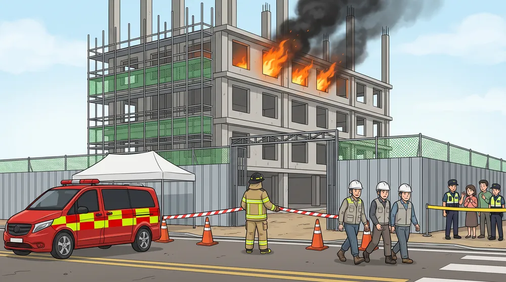
임시의료소: 분류 → 응급처치 → 이송. 그리고 현황 보고.
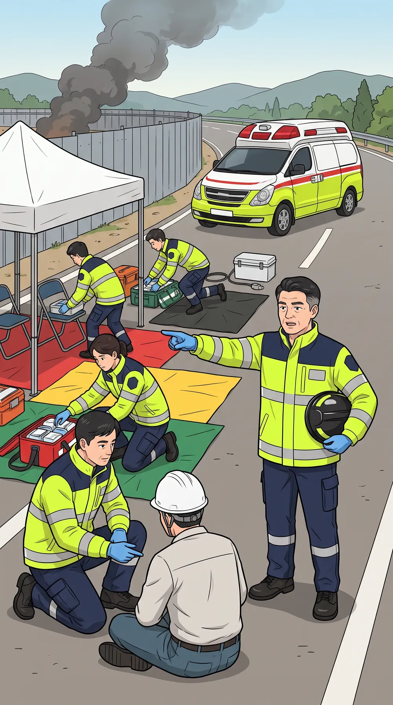
추가로 온 구급대까지 반을 나눈다. 분류는 여기, 처치는 저쪽 천막, 이송은 정문 쪽 구급차로. 응급부터 먼저 보낸다.
지휘대장, 임시의료소장. 현재 사상자 2명. C면 6층에서 구조된 작업자 2명, 둘 다 연기흡입 경상, 비응급 분류. 처치 후 순서대로 이송하겠음. 작업자 인원은 현장소장 명단과 대조 중.
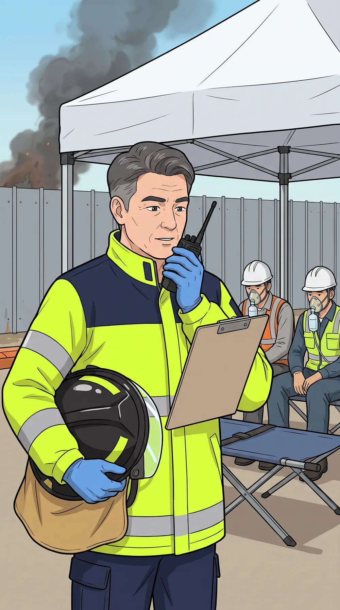
선배님은 안 들어가세요?
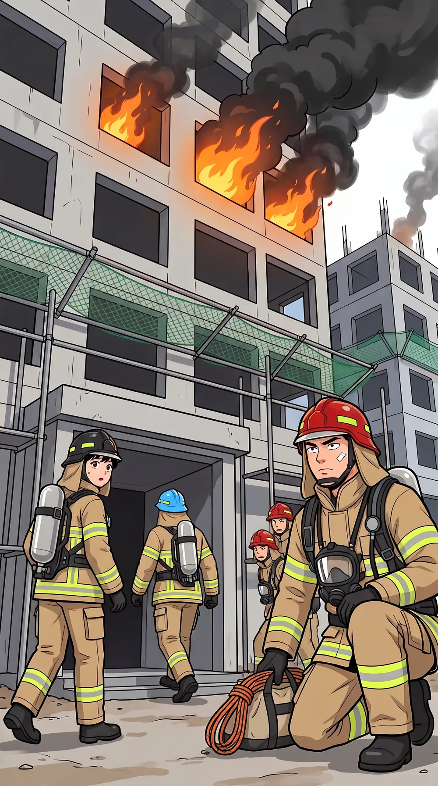
우린 너희가 위험할 때 들어간다. 무전 꼭 켜 둬.
4층 안쪽, 자재 더미 옆 금속 용기에서 '쉬익' 하는 소리. 무엇이, 어디서 이상한지 도경의 말은 거기서 멈췄다.
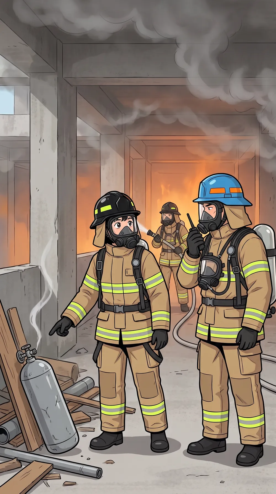
지휘대장, 4층 단위지휘관. 4층 투입 8명, 화세 강하고 인명검색 절반 진행, 구조대상자 미발견. 안쪽 자재 적치 구역 열기 높음, 확인 중.
대장님, 저기… 뭔가 이상한데요.
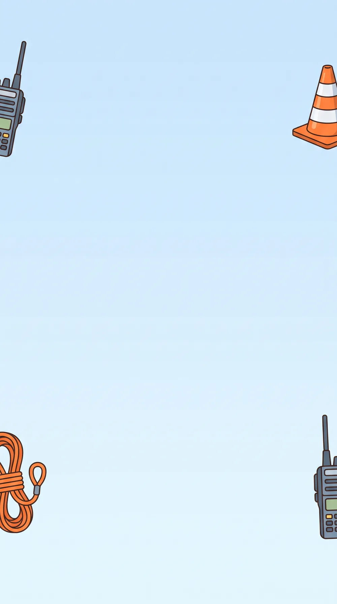
핵심 포인트
- 통솔범위(3~7)를 넘기 전에 층별 단위지휘관을 지정하고 소속대를 밝히며, 무전망을 지휘망·작전망·지원망으로 나눈다SOP 105 3.1 · 107 3.2 · p.96
- 추가 출동대는 자원대기소로, 진입지점 가까이엔 직전대기와 RITSOP 103 2.2 · 교육자료 p.22
- 통제선으로 소방활동구역을 확보하고, 임시의료소는 분류·처치·이송과 현황 보고교육자료 p.23 · SOP 402 3.2.1
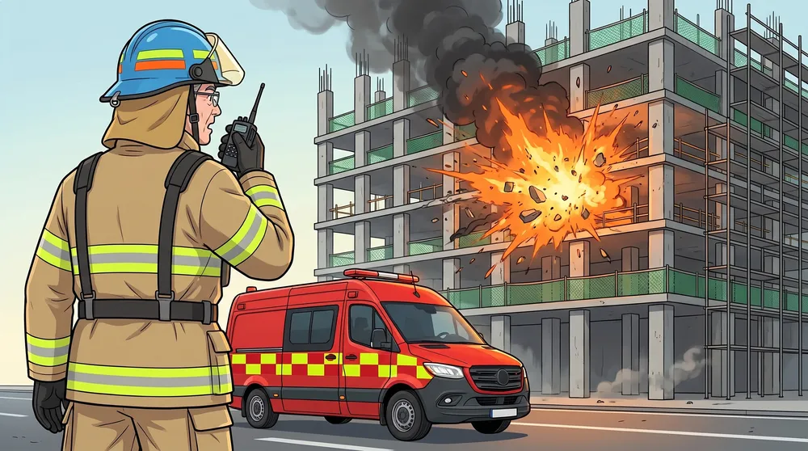
다음 화 — 「폭발」. →
모든 무전보다 먼저 들어가야 하는 무전이 있다.
모든 무전보다 먼저 들어가야 하는 무전이 있다.
근거: SOP100-113 지휘통제절차 해설(2025.12. 개정판) · 교육용 전 12화
만든이: 부산지휘역량강화센터(정종인,서종근,주강호,신태선,고기석,이도경)
만든이: 부산지휘역량강화센터(정종인,서종근,주강호,신태선,고기석,이도경)
 ×
×